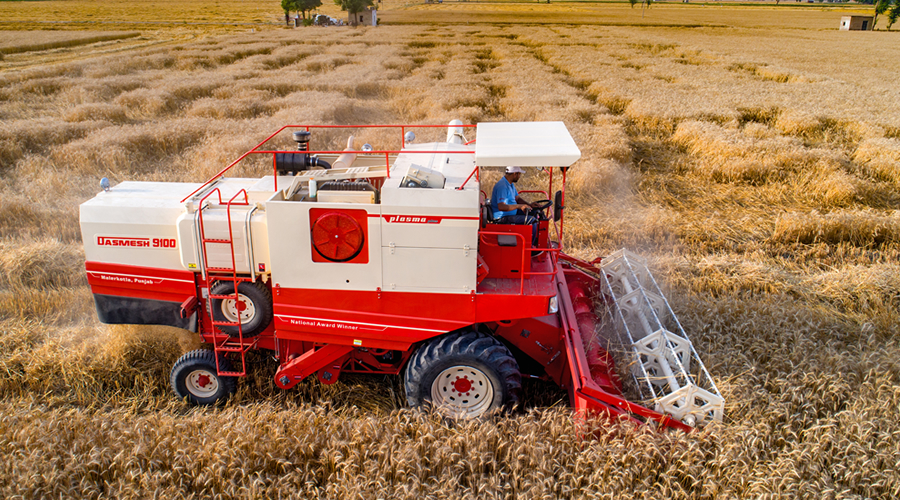
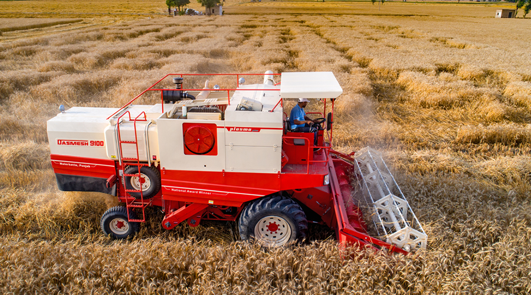
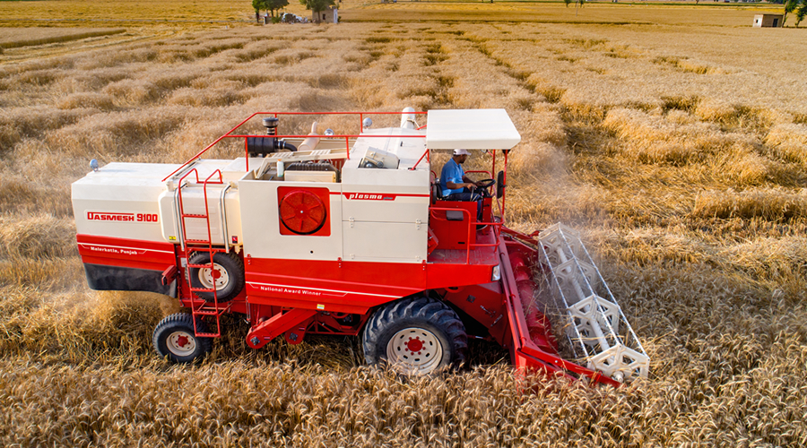

SRI ANJANEYA HARVESTER
vill: Mallapur, Mdl: Kothur, District : Ranga Reddy
Home About Us Charges Contact Us
 
SRI ANJANEYA HARVESTER
vill: Mallapur, Mdl: Kothur, District : Ranga Reddy
The modern combine harvester, or simply combine, is a versatile machine designed to efficiently harvest a variety of grain crops. The name derives from its combining four separate harvesting operations—reaping, threshing, gathering, and winnowing—into a single process. Among the crops harvested with a combine are corn (maize),soyabeans,saw flower,jowar,bengal gram. The separated straw, left lying on the field, comprises the stems and any remaining leaves of the crop with limited nutrients left in it: the straw is then either chopped, spread on the field and ploughed back in or baled for bedding and limited-feed for livestock.